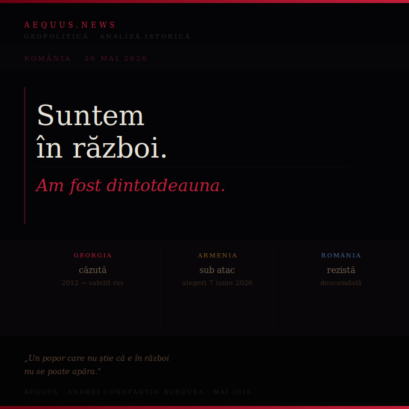

De la 1812 la Galați 2026, România a fost ținta unui singur adversar cu metode schimbate. Tancurile au devenit drone. Securitatea a devenit TikTok. Scopul a rămas același. Georgia a căzut. Armenia e sub atac. România a rezistat în 2024 — dar rezistența a fost accidentală, nu instituțională.

Există o greșeală fundamentală în felul în care România îșii înțelege propria istorie. Tratăm fiecare episod rusesc ca pe o criză separată — Basarabia, ocupația sovietică, Securitatea, Georgescu, dronele de la Galați — în loc să le vedem ca bătălii dintr-un singur război neîntrerupt. Această neînțelegere nu e inocentă. E ea însăși o armă în mâna adversarului: un popor care nu știe că e în război nu se poate apăra.
Rusia nu a fost niciodată un vecin neutru al României. A fost un adversar strategic cu obiective constante: acces la Dunăre și Marea Neagră, control asupra spațiului dintre Carpați și Prut, eliminarea oricărei influențe occidentale în regiune. Metodele s-au schimbat de patru ori în două secole. Scopul nu.
Continuitatea e clară pentru oricine vrea să o vadă. Ceea ce s-a schimbat nu e adversarul și nici scopul. E viteza, precizia și numărul de fronturi deschise simultan.
Presa armeană a publicat recent documente scurse din serviciile secrete rusești — probabil aceeași sursă care l-a demascat pe Sebastian Ghiță ca agent de influență rus. Documentele descriu planul Moscovei de a-l răsturna pe premierul pro-european al Armeniei, Nikol Pașinian, și de a-l înlocui cu oligarhul Samvel Karapetyan. Rapoartele menționează explicit: „Karapetyan are toate șansele să devină un Ivanishvili armean" și că „ar trebui implementat același scenariu ca și cel aplicat în 2012 în Georgia".
Scenariul există în documente rusești. Nu e o interpretare. E un plan scris, cu referințe la precedente, cu nume și cu calendar. Alegerile parlamentare în Armenia sunt pe 7 iunie 2026.
România a rezistat în 2024. Dar rezistența a venit din societatea civilă, din presă independentă și din decizia fără precedent de anulare a alegerilor — nu din instituții pregătite să recunoască și să contracareze atacul. Fără STRATCOM funcțional, fără lege clară despre finanțările externe, fără consens politic că suntem în război, următoarea bătălie poate fi pierdută.
România e în 2026 într-o poziție paradoxală: mai conștientă ca oricând de amenințarea rusă — Galați e imposibil de ignorat — și mai puțin pregătită ca oricând să îi facă față instituțional.
Avem două partide care funcționează în mod obiectiv în favoarea Rusiei: PSD a blocat SAFE la CCR, AUR votează contra înarmării. Avem o armată dotată pentru războiul secolului trecut, nu pentru cel cu drone al secolului acesta. Avem un președinte cu o teorie a medierii care a eșuat pe toate fronturile. Avem un aliat american care pune la îndoială relevanța NATO și un Consiliu al Păcii cu fondul gol.
Și avem o societate care, în proporție de 66%, cere continuarea reformelor — chiar dacă sunt nepopulare. Care, în proporție de 84%, cere schimbarea completă a clasei politice. O majoritate reală, dezorganizată și fără reprezentare executivă în acest moment.
Rogozin a spus după Galați: „Și asta nu e tot, domnilor români." Nu e retorică. E un semnal precis, calibrat, cu audiență internă rusă și cu mesaj extern clar. Manualul continuă. Calendarul e al lor.
Recunoașterea că suntem în război nu e un apel la panică. E un apel la luciditate. Războiul hibrid nu se câștigă cu isterie — se câștigă cu instituții funcționale, cu consens politic în jurul realității și cu o populație care înțelege miza.
Georgia nu a pierdut pentru că nu a avut curaj. A pierdut pentru că nu a recunoscut la timp că e în război. A crezut că promisiunile electorale pro-europene ale lui Ivanishvili sunt reale. A crezut că democrația se apără de la sine.
România are un avantaj pe care Georgia nu l-a avut: știm acum cum arată manualul. L-am văzut aplicat în 2024. L-am văzut documentat în arhivele rusești despre Armenia. Știm pașii, știm actorii, știm calendarul.
Singura întrebare care rămâne: vom construi instituțiile care să îl contracareze înainte ca fereastra să se închidă? Sau vom rămâne o majoritate dezorganizată față de o minoritate cu structuri, bani și calendar?
Răspunsul la această întrebare e România pe care o vom lăsa generației următoare.